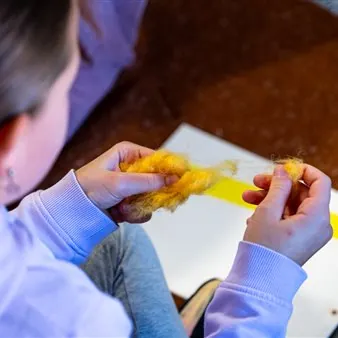

da sab 5 dic a lun 4 gen · dalle 15:30
Laboratori natalizi creativi di riciclo per bambini - Museo della Moda e delle Arti applicate
Durante il periodo natalizio, il Museo apre le porte ai bambini dagli 8 anni in su con una proposta di laboratori. L’obiettivo del progetto è quello di unire gli aspetti della manualità e della sostenibilità ambientale al contesto creativo del museo e alla bellezza delle sue…
 Indicazioni
Indicazioni
- Costi e prenotazioni
- Costo non indicato · Prenotazione non indicata
- Programma
- Programma da verificare. Apri la fonte ufficiale per orari e possibili aggiornamenti.
- In caso di maltempo
- Nessuna indicazione specifica pubblicata.
- Note
- Acquisito automaticamente dalla fonte.
L’EVENTO
Descrizione completa
E se gli oggetti custoditi al Museo della Moda e delle Arti Applicate diventassero fonte d'ispirazione per nuove creazioni natalizie? Tra tessuti, trame, colori e decorazioni, il Museo apre le sue porte a piccoli creativi pronti a sperimentare. Quattro appuntamenti per esplorare le collezioni con occhi curiosi, scoprire il valore dei materiali e trasformare ciò che sembra non servire più in qualcosa di sorprendente.
Gli appuntamenti previsti saranno 4 e si terranno nelle giornate di:
Sabato 5 dicembre, dalle ore 15.00 Intrecci di Natale – Aspettando San Nicolò (IL LABORATORIO SI SVOLGE IN PALAZZO ATTEMS PETZENSTEIN ANZICHE’ A BORGO CASTELLO) Nastri, passamanerie, stoffe e filati: nel museo dove ogni tessuto racconta una storia, anche i più piccoli ritagli possono diventare preziosi! Ispirandoci alle trame e alle decorazioni delle collezioni, realizzeremo una ghirlanda natalizia intrecciando materiali di recupero, colori e fantasia.
Sabato 12 dicembre, dalle ore 15.00 - Un filo di magia Come si trasforma un semplice filo in una decorazione? Osservando i dettagli degli abiti e degli accessori del Museo, giocheremo con intrecci, accostamenti e texture per dare nuova vita a cartone, filati e piccoli avanzi. Il risultato? Un addobbo natalizio che sembra uscito da un laboratorio di moda!
Sabato 19 dicembre, dalle ore 15.00 La natura si veste a festa Anche la natura ha le sue trame e i suoi colori! Partiremo dai motivi decorativi delle collezioni del Museo per scoprire come forme e materiali naturali possano diventare ornamenti. Pigne, rametti e piccoli tesori raccolti si trasformeranno in originali palline per l'albero di Natale.
Lunedì 4 gennaio, dalle ore 15.00 Trame di carta, giochi di luce Al Museo della Moda non sono solo i tessuti a creare meravigliose composizioni: anche colori, motivi e accostamenti hanno il loro linguaggio! Prenderemo spunto dalle arti decorative per trasformare le pagine di vecchi libri in tessere di un insolito mosaico, dando vita a un vasetto portacandela capace di illuminare le feste.
Posti limitati, per prenotazioni: didatticamusei.erpac@regione.fvg.it 0481 385230
IL PROGRAMMA
Programma e orari
Appuntamenti raccolti dalle fonti elencate. Dove manca un orario, non è ancora disponibile in questa scheda.
Programma pubblicato
- Dal 2026-12-05 al 2027-01-04
INFORMAZIONI UTILI
Prima di partire
- Controllare la fonte prima di partire.
ORGANIZZAZIONE